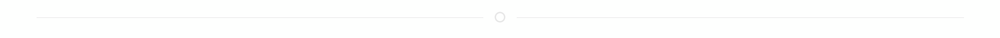

Chào mừng bạn quay lại với UNIPATH 🌟

Chào mừng bạn quay lại với UNIPATH 🌟

Tin tức
Bộ GD-ĐT cho hay ma trận đề thi không có trước như các năm mà được sinh ra một cách ngẫu nhiên trong các chủ đề học...
Xem thêm
Từ năm sau, kỳ thi tốt nghiệp có thể diễn ra sau bế giảng năm học 2 tuần, để thầy trò ý thức việc học chính khóa...
Xem thêmSố lượng người đã truy cập
Số lượng người đã truy cập trong tháng
Số lượng người đang truy cập